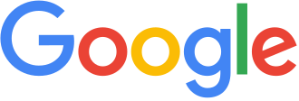

Google logo
Source: https://en.wikipedia.org/wiki/Google_logo
Category: company__depth2
Depth: 2
Summary
The Google logo appears in numerous settings to identify the search engine company. Google has used several logos over its history, with the first logo created by Sergey Brin using GIMP. A revised logo debuted on September 1, 2015. The previous logo, with slight modifications between 1999 and 2013, was designed by Ruth Kedar, with a wordmark based on the Catull font, an old style serif typeface designed by Gustav Jaeger for the Berthold Type Foundry in 1982.
Images


Full Article
Company logo
The Google logo appears in numerous settings to identify the search engine company. Google has used several logos over its history, with the first logo created by Sergey Brin using GIMP. A revised logo debuted on September 1, 2015. The previous logo, with slight modifications between 1999 and 2013, was designed by Ruth Kedar, with a wordmark based on the Catull font, an old style serif typeface designed by Gustav Jaeger for the Berthold Type Foundry in 1982.
The company also includes various modifications or humorous features, such as modifications of their logo for use on holidays, birthdays of famous people, and major events, such as the Olympics. These special logos, some designed by Dennis Hwang, have become known as Google Doodles.
History
In 1997, Larry Page created a computerized version of the Google letters using the free graphics program GIMP. The typeface was changed and an exclamation mark was added mimicking the Yahoo! logo.
"There were a lot of different color iterations", says Ruth Kedar, the graphic designer who developed the now-famous logo in May 1999. "We ended up with the primary colors, but instead of having the pattern go in order, we put a secondary color on the L, which brought back the idea that Google doesn't follow the rules." The font Catull was used, "I was trying to find something that was both traditionally tied to the beautiful fonts in the past and also had a very current and in some ways surprising ways", says Ruth, "I really loved the way that it had these very elegant stems and ascenders and descenders and also had these Serifs that were very, very precise and I wanted something that when you looked at it, it was very clear that it's something you haven't seen before".
In 2010, the Google logo received its first major overhaul since May 31, 1999. The new logo was first previewed on November 8, 2009, and was officially launched on May 6, 2010, exclusively for Google Search, replacing the 1999 Google logo. It utilizes the same typeface as the previous logo, but the "o" is distinctly more orange-colored in place of the previously more yellowish "o", as well as a much more subtle shadow rendered in a different shading style. The old 1999 Google logo remained in use as the corporate branding for the company as well as all other Google services until November 15, 2010, when a slightly modified version of the 2010 Google logo was used for the corporate branding, Google Apps (including all its associated apps such as Gmail), other Google services such as Google Sign-In, country-specific versions of Google, and Google Search itself, replacing all instances of the 1999 Google logo. The capital 'G' and lowercase 'g' of the logo featured a more saturated blue color than the initial logo.
On September 19, 2013, Google introduced a new "flat" (two-dimensional) logo with a slightly altered color palette. The old 2010 Google logo remained in use on some pages, such as the Google Doodles page, for a period of time. On May 24, 2014, the Google logo was slightly updated with some minor typographical tweaks, with the second 'g' moved right one pixel and the 'l' moved down and right one pixel.
On September 1, 2015, Google introduced a controversial "new logo and identity family" designed to work across multiple devices. The notable difference in the logo is the change in the typeface. The colors remained the same as with the previous logo, however, Google switched to a modern, geometric sans-serif typeface called Product Sans, created in-house at Google (which is also used for the Alphabet logo). On May 12, 2025, Google updated its logo in the Google app on iPhones and Pixel phones. The notable change is the updated color scheme, to include a gradient between sections of color instead of solid blocks.
Google logos
- Initial Google logo from September 15, 1997 to September 27, 1998
- Original logo in the Baskerville Bold typeface, used from September 28, 1998 to October 29, 1998. It uses a different color combination from the one in use today, with the initial "G" being colored green.
- The logo used from October 30, 1998 to May 30, 1999, differs from the previous version with an exclamation mark added to the end, an increased shadow, letters more rounded, and different letter hues. Note that the color of the initial G changed from green to blue. This color sequence is still used today, although with different hues and font.
- The company logo changed to one based on the Catull typeface and was used from May 31, 1999 to November 14, 2010. The exclamation mark was removed, and it remained the basis for the logo until August 31, 2015.
- The logo used for Google Search from May 6, 2010 to November 14, 2010, showing a reduced distance of the projected shadow, a change in the second "o" to a different yellow hue and a more flattened lettering
- The company logo used from November 15, 2010 to September 18, 2013. It is identical to the design of the logo introduced on May 6, 2010 for Google Search, but with some minor changes in the blue hues of the logo.
- The logo used from September 19, 2013 to August 31, 2015, showing flattened lettering and the removal of shadows
- The logo used since September 1, 2015, featuring a new typeface, Product Sans. The colors remain unchanged from the previous logo.
Google Doodles
Main article: Google Doodle
The first Google Doodle was in honor of the Burning Man Festival of 1998. The doodle was designed by Larry Page and Sergey Brin to notify users of their absence in case the servers crashed. Subsequent Google Doodles were designed by an outside contractor, until Larry and Sergey asked then-intern Dennis Hwang to design a logo for Bastille Day in 2000. Today, doodles are designed and published by a team of employees ("doodlers").
Colorless logo
A colorless version of the logo is particularly used on a local homepage in recognition of a major tragedy, often for several days. It was first used on the Google Poland homepage in April 2010 following the Smolensk air disaster that killed, among others, Polish president Lech Kaczyński. A few days later, the logo was used in China and Hong Kong to pay respects to the victims of the 2010 Qinghai earthquake.
On September 7, 2010, a colorless Google logo going by the name of the "Keystroke Logo" was introduced, which lit up with the standard Google colors as the first 6 letters of a search query were entered.
A new version of the colorless logo was introduced on December 5, 2018, following the death of George H. W. Bush, and was used again on May 27, 2019, for Memorial Day (and every Memorial Day holiday since), on September 8, 2022, following the death of Queen Elizabeth II (a black version of the colorless logo was used for the funeral of Queen Elizabeth II a week later on September 19, 2022) and on January 9, 2025, following the death of Jimmy Carter.
A white version of the colorless logo is used in Google Chrome when a background image is set on the main home page, which can also appear when dark mode is selected in the browser.
Favicon
Google's first favicon from May 31, 1999, to May 29, 2008, was a blue, uppercase "G" on white background accompanied by a border with a red, blue, and a green side, debuting alongside Google's then-new logo design in May 1999.
On May 30, 2008, a new favicon was launched. It showed a lowercase "g" from Google, colored in blue against a white background, and originally was intended to be a part of a larger set of icons developed for better scalability on mobile devices.
A new favicon was launched on January 9, 2009. It included a left-aligned white "g" with background areas colored in red, green, blue and yellow, with the top, bottom, and left edges of the "g" cropped. It was based on a design by André Resende, a computer science undergraduate student at the University of Campinas in Brazil. He submitted it for a contest launched by Google in June 2008 to receive favicon submissions. The official Google blog stated: "His placement of a white 'g' on a color-blocked background was highly recognizable and attractive, while seeming to capture the essence of Google".
The favicon used from August 13, 2012, to August 31, 2015, showed the small letter "g" in white, centered on a solid light blue background.
On September 1, 2015, a new favicon was launched in conjunction with the new logo design that day, which shows a capital letter "G" in the tailor-made font for the new logo, with segments colored red, yellow, green, and blue. It was updated with a gradient between the colored segments in May 2025, which visually connects with the gradient present in the logo of Google's generative artificial intelligence chatbot Gemini.
References
Further reading
- Frost, Aja (7 December 2019). "The Secret History of the Google Logo". HubSpot. Retrieved 2022-06-25.
External links
Listen to this article (9 minutes)

This audio file was created from a revision of this article dated 13 March 2021 (2021-03-13), and does not reflect subsequent edits.
(Audio help · More spoken articles)
 Media related to Google logos at Wikimedia Commons
Media related to Google logos at Wikimedia Commons- Official Google Doodle logos archive
- Catull at identifont.
| - v - t - e Google | |
|---|---|
| a subsidiary of Alphabet | |
| Company | |
| Development | |
| Software | |
| Hardware | |
| - v - t - e Litigation | |
| Related | |
| Italics denote discontinued products. - Category - Outline |